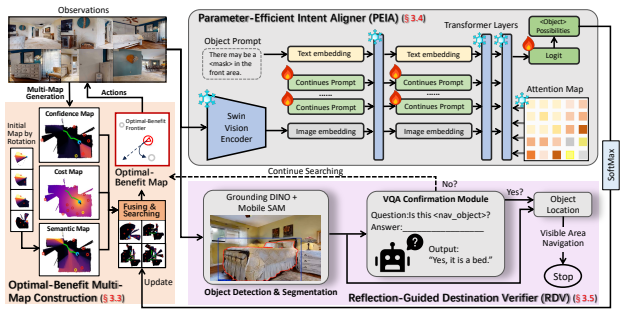

AAAI 2026 (CCF-A)Chain-of-Search: Parameter-Efficient Reasoning for Zero-Shot Object Navigation
Proceedings of the AAAI Conference on Artificial Intelligence (AAAI 2026, CCF-A), 40(3):1721–1729, 2026
通过收益与成本感知建图、意图对齐和反思式目标验证，实现高效的零样本目标导航。
PDF ↗Published
BibTeX
@inproceedings{chen2026chain,
title={Chain-of-Search: Parameter-Efficient Reasoning for Zero-Shot Object Navigation},
author={Chen, Hanrui and Yan, Liqi and Wang, Qifan and Zhang, Jianhui and Guan, Fangli and Li, Pan},
booktitle={Proceedings of the AAAI Conference on Artificial Intelligence},
volume={40},
number={3},
pages={1721--1729},
year={2026},
doi={10.1609/aaai.v40i3.37150}
}